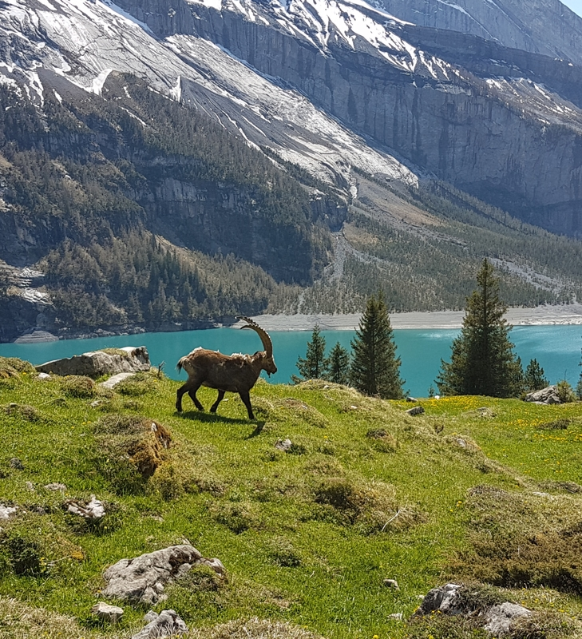

Static archive of a former Omeka site (snapshot 2026-11-24). Search and interactive features are not available.
Skip to main content
Data literacy (Frühling 2020)
Start
Forumsdiskussionen über Moderation
RETURNING TO DOFUS
RIGHTS TO PLACE PRISMES
HALLO MODS!
HANDEL-SACHEN WEG
STOP LE BENEVOLAT
MUTE INCOMPRÉHENSIBLE
Reflexion
Drucke aus Japan
Japanische unbegrenzte Flächenmuster
Bailei Skizzenbuch: Vogelbilder
Reflexion
Kinderhexenprozesse im Kanton Bern und in der Waadt 1441-1678
Jaggatlin
Wälscher Knabe
Stäffan Öler
Michel Schnÿder
Frantz N.
Claude Clot
Jung Knab
Reflexion
20200504_175825.jpg
Medien
Part of
Steinböcke beim Oeschinensee
